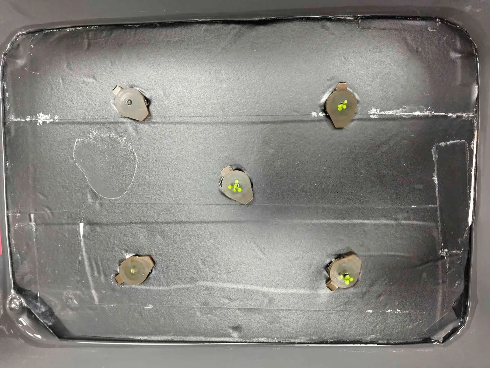
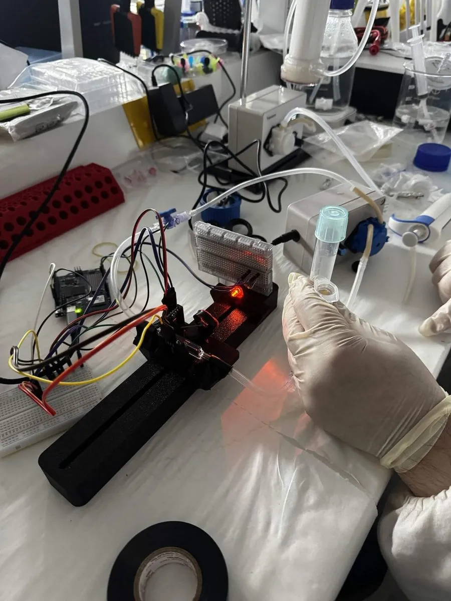
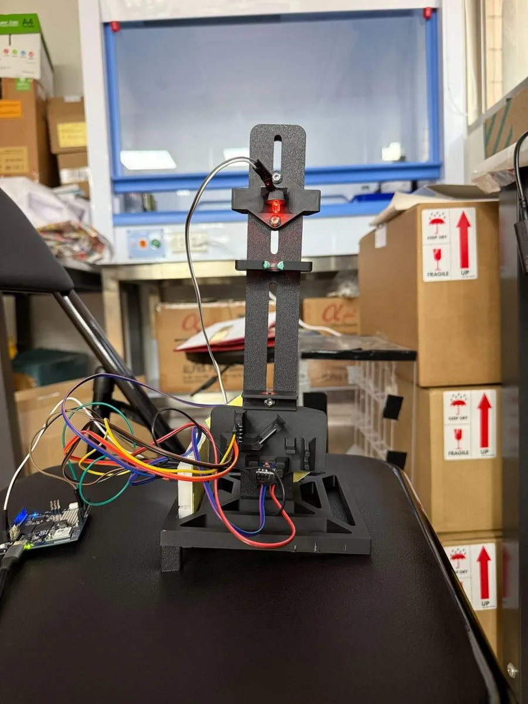
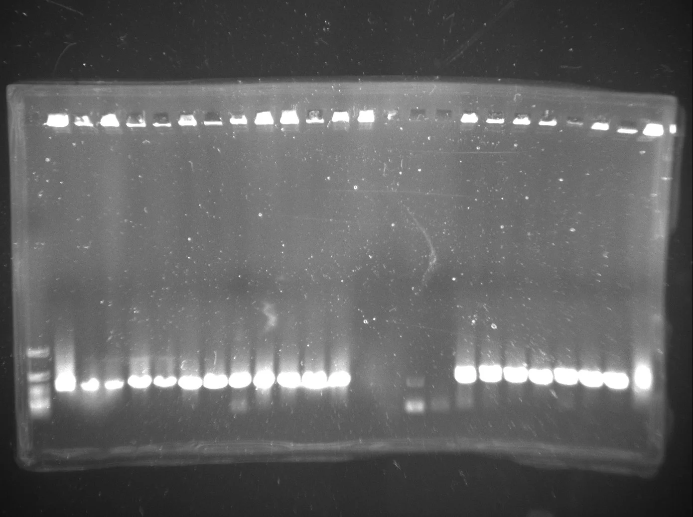
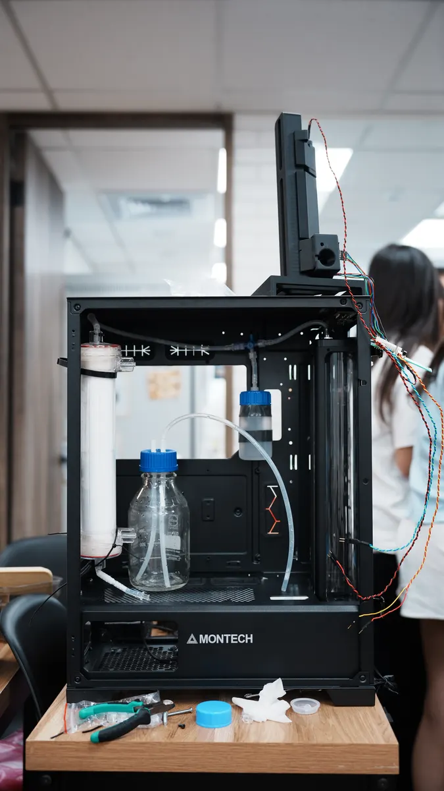

Nothing on this page was measured for this page. Every number here is taken from the page that argues it properly, and linked at the point it is used. Where a stage has no evidence behind it, the table says so in the same words it uses for the stages that do.
What success for the whole system looks like
ReLeaf gives a plant protection on demand by producing the protectant where it is needed instead of spraying it in advance. That requires several separate systems to hand off to each other: a stress signal has to be read, the signal has to become a light command, engineered Bacillus subtilis has to answer that light by making a protectant, the bacteria have to stay behind a membrane while the protein crosses it, enough protein has to reach the plant, and the plant has to be measurably better off. The design as a whole is set out on Description.
So showing that each part works is not the same as showing that ReLeaf works. A team can build a good reactor, a good instrument and a good construct and still have a project that does nothing to a plant, because the thing that fails is the handover. Success for ReLeaf is therefore defined here as a complete chain of six functions, in order.
Detect, activate, produce, contain, deliver, protect
The dependency runs one way and it is strict. If stage 2 never switches the cells on, then a perfect result at stage 4 tells a judge nothing about ReLeaf, because containment of an unswitched culture is containment of the wrong thing. This is why the page that reports our evidence, Results, walks the chain in order rather than reporting each sub-team's best day.
Two naming notes, so that this page and the rest of the wiki agree. Results numbers its own sections against the same chain with different labels: its Stress signal is stage 1, Light delivery is stage 2, Protectant function carries stages 3 and 6, Whole system carries stages 3 and 5, and Containment is stage 4. And the protectant carried through every stage below is ACC deaminase, which is the one of our four cargoes that reached a reactor and a plant; the other three are on Parts.

How we decide whether a stage has been demonstrated
For each of the six stages we asked the same five questions: what does this stage have to accomplish, what can be measured, what counts as good enough, what evidence would support the claim, and what happens downstream if this stage is weak. The flow below is the team's own validation framework, redrawn for this page.
The framework is worth stating because it decides what a good result is allowed to claim. A measurement that answers does this part work does not answer do the parts connect. Our strongest single result, a Level-2 device junction-checked on three independent clones on 19 September, is component validation. It says nothing about whether green light changes what those cells make, which is an interface question, and the experiment that would answer it has not been run (Results, light delivery).
Success criteria for each stage
The criteria below are the team's own, with the thresholds kept as written. Four status words are used and they are used strictly.
| Status | What it means on this page |
|---|---|
| Met | The experiment was run, it produced a number, and the number clears the criterion. |
| Partly met | Evidence exists and it does not carry the whole criterion. The cell says what is missing. |
| Not met | The experiment was run and the criterion was not cleared. |
| Not yet tested | No experiment exists. The apparatus may exist; nothing has been asked of it. |
| Stage | Functional requirement | Acceptance criterion | Current status |
|---|---|---|---|
| Detect | Identify the target stressMetric: detection accuracy | Correct presence or absence of the stress in ≥90% of predefined test conditionsEvidence: sensor reading against a known stress condition | Not yet tested No sensor has been scored against a known stress. Results, stress signal |
| Detect | Give repeatable readingsMetric: coefficient of variation | CV ≤10% on repeated measurements in identical conditionsEvidence: repeated sensor measurements | Not yet tested No repeat series exists. Measurement, state of each measurement |
| Detect | Detect in time to actMetric: detection response time | Detection within the treatment window. Target ≤3 min (proposal, see note below)Evidence: time-series sensor data | Not yet tested No timed detection run exists. Math Model, optogenetics kinetics |
| Detect | Distinguish stress severityMetric: signal against stress intensity | Monotonic, reproducible relationship across at least three predefined stress levelsEvidence: sensor readings across stress levels | Not yet tested The plant side of this is measured across four salt levels; the sensor side is not. Plants, performance comparison |
| Activate | Convert the reading into the right commandMetric: activation accuracy | ≥90% correct activation decisions: active under stress, inactive under non-stressEvidence: sensor and controller integration test | Not yet tested No forecast has ever driven a light. Results, stress signal |
| Activate | Activate quickly enoughMetric: detection to activation delay | ≤3 min (proposal, see note below)Evidence: controller logs | Not yet tested No integration log exists. Software |
| Activate | Emit the intended light signalMetric: peak wavelength and irradiance | Green 525 nm ±30, red 660 nm ±30Evidence: light measurements | Partly met The two-wavelength array exists and both channels were measured for intensity; the LED peak wavelengths are blank in its bill of materials. Hardware, DiOPAL |
| Activate | Hold the signal steady while runningMetric: light intensity variation | Intensity varies by no more than 10% during operationEvidence: continuous light monitoring | Partly met The green channels sit within about 3% of each other, which is LED binning; well-to-well evenness was written as a criterion on 19 May and never measured. Results, light delivery |
| Produce | Respond to the light signalMetric: fold change, induced against non-induced | Significant increase in protectant under the activating conditionEvidence: light-plate run with an expression readout | Not yet tested No induction curve exists anywhere in the project. Results, light delivery, Engineering, sheet 02 |
| Produce | Make the intended protectantMetric: protectant present | Target protein detectable above the assay's validated detection limitEvidence: western blot, then anti-His ELISA | Partly met Two blots put ACC deaminase in the supernatant, 2 August, and a band at about 41 kDa in one culture, 24 August. The ELISA and the activity assay are written and unrun. Results, whole system, Measurement, ELISA for ACC deaminase |
| Produce | Make enough of itMetric: protectant concentration | Reaches the minimum concentration needed at the plant after transfer and dilutionEvidence: quantified assay against the plant requirement | Not yet tested No titre exists. The model carries 5.4 mg/L as a literature placeholder and says so. Math Model, GIS economic impact |
| Produce | Be controllableMetric: output under green against red or dark | Activating condition produces significantly more than the non-activating controlsEvidence: light-plate run with controls | Not yet tested The array has never run a CcaS/CcaR experiment on a live culture. Results, light delivery |
| Produce | Keep producingMetric: output retention over time | Output stays at ≥80% of its initial value across the intended operating periodEvidence: long reactor run with a quantified readout | Not yet tested A 44-hour anti-His time course was run and our own records read it three ways. Engineering, sheet 05 |
| Contain | Keep the engineered cells insideMetric: viable cells downstream | No detectable viable engineered cells in the output streamEvidence: shell-side plating | Partly met One 2 mL shell-side plating on 6 June grew no colonies. One plate, no replicate, incubation time and temperature unrecorded. Results, containment |
| Contain | Maintain membrane and loop integrityMetric: leakage, pressure and flow | No membrane failure, abnormal leakage or loss of containment during a runEvidence: pressure and flow monitoring | Not met The first run ended early when lumen-side culture leaked at the pump head. No cartridge integrity check is recorded before or after any session. Hardware, Bioreactor |
| Contain | Hold containment for the whole runMetric: leakage over time | The containment criterion is satisfied throughout the intended runEvidence: multi-day reactor test | Not yet tested The longest run with a membrane module fitted is hours, not days. Hardware, Bioreactor |
| Contain | Catch a breach before it mattersMetric: downstream culture or turbidity signal | An abnormality is detected before continued operation makes it worseEvidence: downstream culture test, breach detector | Not yet tested The leakage detector, the membrane breach detector and the escape turbidity meter are all design only. Measurement, state of each measurement |
| Deliver | Get the protectant across the membraneMetric: concentration on the output side | Target protectant detectable and quantifiable on the shell sideEvidence: output-side assay | Not met The reactor time course is the one test of this and two of our own drafts read the same blot in opposite directions. Results, whole system |
| Deliver | Deliver a useful doseMetric: delivered concentration | Output reaches the minimum plant-effective concentrationEvidence: output assay against a plant-response requirement | Not yet tested No plant-effective concentration has been established for any of our protectants. Plants, effective concentration prediction |
| Deliver | Deliver consistentlyMetric: concentration CV | Repeated and time-series output samples agreeEvidence: repeated sampling | Not yet tested No repeated output sampling exists. Results, whole system |
| Deliver | Keep delivering during a runMetric: transfer efficiency over time | Delivery stays within ±20% of the intended range at steady stateEvidence: time-course sampling, transmembrane pressure log | Not yet tested Every pressure reading is a spot value and three runs disagree threefold at the same flow. Results, whole system |
| Deliver | Deliver fast enoughMetric: transfer efficiency | A measurable, reproducible fraction of what is produced reaches the output. Target ≥50% (proposal, see note below)Evidence: flow and concentration measurements | Not yet tested No transfer rate has been measured; it is the reactor's second open parameter. Hardware, Bioreactor |
| Protect | Produce a biological effect at the delivered doseMetric: plant response against a stressed control | Treated stressed plants beat stressed untreated controls on a predefined primary metric, significantlyEvidence: controlled plant experiment | Not met Six trehalose sets and four peptide trials; no rescue survives its own controls, and no statistical test has been applied to any comparison. Plants, screening system verification |
| Protect | Improve plant performanceMetric: root length, fresh weight or chlorophyll | ≥20% improvement over the stressed control on the primary metricEvidence: controlled plant experiment | Not met Every trehalose move in set 6 sits inside its own group's standard deviation. The one large effect, about 3.5-fold at 100 mM, sits on a plate whose own no-salt control failed. Results, protectant function |
| Protect | Be dose dependent or otherwise predictableMetric: response against dose | A dose-response relationship that can be fittedEvidence: dose-response experiment | Not met Across sets 1 to 6 the relationship between trehalose dose and root length is not monotonic in either direction, so there is no curve to fit. Plants, effective concentration prediction |
| Protect | Have a usable treatment timingMetric: response against timing | At least one dose or timing gives a reproducible protective effect, with an operating range identifiedEvidence: timing experiment | Not met Three trials of the timing series rank the three timings three different ways. Plants, performance comparison |
| Protect | Be reproducibleMetric: effect size across independent replicates | The protective effect is seen across independent biological replicatesEvidence: replicated plant experiment | Not met Biological replication is one plate or one box per condition throughout, and no run has been repeated end to end at the final protocol. Plants, screening system verification |
The structure document this page is built from flags the ≥50% transfer efficiency target for team review, and we are flagging two more for the same reason. The ≤3 min detection and activation targets were written without reference to the system's own slowest time constant: the published activation half-time for this optogenetic system is 105.1 ± 1.5 minutes (Math Model, optogenetics kinetics), which is an order of magnitude longer than anything else in the loop. A three-minute detection target in front of a hundred-minute production response may be the wrong specification, or it may be right for a different reason that nobody has written down. All three need a decision before the freeze.
Read down the status column and the pattern is the shape of the project. The stages a team can close with careful bench work in one summer, and the sub-stages within them, are the ones with evidence. The stages that need two working halves at once are the ones marked not yet tested, and that is the honest reading of where ReLeaf stands in September 2026.
Our first attempts
Before we could build a system that met those criteria we had to find out what did not work. Every subsystem in ReLeaf started with a prototype that failed, and in most cases failed in a way nobody had predicted. The failures are grouped below by subsystem, and each one is read the same way: what went wrong, why, what it cost, and what we changed because of it.
Where our own record does not say why something failed, this page says "not recorded" rather than supplying a plausible reason.
Plant system
The hydroponic boxes contaminated, four out of five. The hydroponic platform was built to put a root in a known concentration of protectant in water, which is the closest thing to how a protectant would actually be delivered. Five box designs were built between April and June. Prototypes 1, 2, 3 and 5 were sown with seed and every one of them contaminated, germinating 4, 3, 1 and 7 seeds of 10. Prototype 2 also leaked.

- Failure. Contamination of the growth medium in four of five hydroponic prototypes, with germination as low as 1 of 10.
- Cause. Seed was sown directly into an open reservoir of medium. Contamination appeared at the dried-medium line around the rim, which is where a large open surface concentrates nutrient and dries between top-ups. Prototype 3 also traded surface area for depth, which made it worse (Plants, hydroponics).
- Consequence. Four box designs were abandoned. The hydroponic timing experiment that eventually ran has one box per arm, which is the reason nothing from it can be attributed to a treatment (Plants, timing in the water boxes).
- Lesson. Plants enter the box as four- to seven-day-old seedlings transferred from an agar plate, never as seed. Prototype 4 ran that way and 5 of 5 seedlings came through six days with no problem we could name. Prototype 5 is the control that proves the point: the same box, back to sown seed, and the contamination came back with it.
A rack of vertical plates was loaded the wrong way round. Vertical agar plates work because gravity is the signal: roots grow down the face of the plate and can be traced. Racked the wrong way, the seedlings grow sideways and the run measures nothing.


- Failure. A fortnight of root-length data from a vertical plate run, unusable.
- Cause. The rack was loaded in the wrong orientation for several days before anybody noticed.
- Consequence. The run produced no root length. The seedlings were moved into the hydroponic boxes instead of being discarded (Plants, agar).
- Lesson. Plates carry an orientation label from this run onward, and no later run has repeated it.
Trehalose never became a working positive control. Trehalose was never a candidate protectant. It is the reference osmolyte we run to ask whether the assay can see a rescue at all, and after six sets we cannot call it validated.
- Failure. Six experiment sets between 10 May and 3 August, and no reliable rescue in any of them.
- Cause. The useful window is narrow and the compound is toxic just above it: 1 mM alone cut unstressed seedlings to 14.6 mm against a 51.7 mm control, while 0.5 mM was harmless and rescued nothing (Plants, performance comparison). A scheduling mistake made it worse: the two trials of set 5 picked different best doses, 5 mM and 10 mM, and set 6 was already designed around 5 mM before the second analysis came back.
- Consequence. The screen has no validated positive control, so a negative result on a real protectant cannot be separated from an assay that cannot detect a rescue. Trehalose was taken out of the circuit design in August.
- Lesson. Validate the positive control before screening anything against it, and do not design the next set until the previous set's analysis is in.
The ACC deaminase plant run was abandoned twice in one month. Set 8 is the only agar trial of the project's headline protectant, and it produced no number.

- Failure. The pretest grew bacteria on every plate that received the preparation within three days, while untreated and salt-only controls stayed clean. Trial 1, sown three days later, grew bacteria again.
- Cause. Two separate causes, and both are recorded. For the contamination, the preparation was passed through the 0.22 µm filter on the open bench instead of inside the laminar flow hood, which put the one sterile step of the protocol in the one place with no clean air over it. For the pretest, a Western blot run on 24 August on the same culture that had been sprayed found no ACC deaminase in it at all (Plants, the ACC deaminase run).
- Consequence. The project's headline protectant has never produced a plant number. The two trials are gone, one to a preparation with nothing in it and one to bacteria on the plates.
- Lesson. Blot every batch before it touches a plant. The August plan had explicitly said the first two ACCD trials could run without a blot of their own, and that decision cost both of them.


The chlorophyll readings were taken at the wrong wavelength. On 5 August the team found that absorbance had been read at 633 nm where the method calls for 663 nm. The error reaches experiment sets 4, 6, 7 and 8, and one worksheet carries two conflicting formulas eight rows apart. The consequence is that every agar chlorophyll number in the project is out of use until the plates are read again, and none is quoted as a result anywhere on this wiki (Plants, screening system verification). The lesson the team wrote down is that a column header is not a formula, and both have to be checked.
Bioreactor and hardware
The first reactor run lost containment at the pump. Cycle 1, on 6 June, was the simplest possible loop: a PES hollow-fibre cartridge, a 500 mL reservoir holding 300 mL of LB with a 20 mL inoculum, a peristaltic pump and a luer valve.
- Failure. The run ended early when the loop leaked at the pump head, and what leaked was lumen-side culture rather than sterile medium. Final readings were OD600 0.304 in the loop against 0.480 in the comparison sample.
- Cause. The tubing was not rated for the pump head. The OD gap was traced separately to sedimentation: with no active mixing, cells settle and the reservoir stops representing the loop (Hardware, Bioreactor).
- Consequence. The containment boundary turned out to be larger than the membrane. A cartridge that retains every cell is irrelevant if the pump head does not, and the containment claim now has to cover tubing, connectors and pump as well.
- Lesson. Biocompatible BPT tubing for the seal at the pump, a magnetic stirrer in the reservoir, and the sampling port moved to the reservoir outlet so the reading is representative.
A membrane specification claim was written before the part was checked. An earlier version of the reactor specification claimed a 50 kDa molecular weight cut-off and stated that the membrane retains secreted membrane vesicles. The part actually fitted is rated 0.2 µm, which passes ACC deaminase at roughly 36 kDa as intended and therefore also passes vesicles and cell debris. The claim was withdrawn in week 18 and containment now rests on cell size alone (Hardware, Bioreactor). The lesson is short: read the datasheet for the part you bought, not the one you specified.
The first photometer could not hold a reading. The inline photometer was built because a benchtop instrument cannot sit in a closed loop, and sampling a closed reactor costs volume and risks contamination.


- Failure. Readings from the first build fluctuated severely.
- Cause. Two causes, both identified: gas bubbles accumulating in the flow cuvette and passing through the beam, and lens and beamsplitter mounts loose enough that the alignment shifted during handling (Hardware, Photometer).
- Consequence. Nothing from the first build is usable as a measurement.
- Lesson. Rotate the optical path vertical so bubbles rise clear of the beam, add luer valves and syringes to bleed gas from the line, and tighten the component tolerances.
The finished photometer read a live culture four times too high. This is the failure the project learned the most from, because the instrument was working and the number was still wrong.
- Failure. The final build, read against a Bio-Drop on the reactor, came out roughly four times high. Hand-entering the blank corrected it and overshot, leaving the instrument 33% low against a target of 10%.
- Cause. The blank had been taken through a cuvette that cannot be cleaned in line (Hardware, Photometer).
- Consequence. The accuracy of the final build is unquoted. The 8% figure that appears elsewhere belongs to iteration 3, on a single paired reading, and should not be attached to the instrument as it now stands.
- Lesson. A curve with the right shape and the wrong scale is a hypothesis, not a measurement. Three repeats and a dilution series on the current build are what would let an accuracy figure be quoted, and they have not been run.
The first light array could not support the comparison it was built for. DiOPAL holds twenty-four cultures under six light conditions so a dose response can be read in one run.
- Failure. Iteration 1 established the dual-wavelength concept and could not control output consistency between LEDs, and had no shielding against room light (Hardware, DiOPAL).
- Cause. LEDs of the same part number differ in output, and ambient light swamps the low-intensity conditions, which are precisely the conditions a dose response needs.
- Consequence. Any intensity comparison run on that build would have been meaningless.
- Lesson. Measure forty LEDs individually at a fixed geometry, keep the twenty-four that fall into tight groups of four, discard the sixteen rejects, and put a lid on the box. What is still open after that fix is whether the three tiers are intensity tiers at all: the measured green channels span 2.33 to 2.40 kLux, a spread of about three per cent, and the duty cycles that would separate them are unrecorded (Results, light delivery).
Three pressure runs disagree threefold at the same flow. Transmembrane pressure was logged against flow on 13 and 14 August. Pressure rises with flow in all three runs, and at about 405 mL/min the three read 3.73, 1.13 to 1.26, and 3.22 to 3.52 psi. Neither the condition labels nor a membrane identifier were recorded, so the spread cannot be explained. The consequence is that no transmembrane pressure number from this project can be published, and the fouling measurement that the reactor's service life depends on has never been attempted (Results, whole system). The cause of the spread is not recorded.
Genetic circuit and production
The first cloning strategy produced a screen that could not be read. The circuit was first designed to the MoClo 2.0 standard, with each part amplified to carry its own type IIS sites and taken straight into a Level 1 Golden Gate reaction.

- Failure. High background on the screen: empty vectors and off-target bands, with Golden Gate efficiency low throughout.
- Cause. There was no verified Level 0 stage. Going into Level 1 straight from unverified PCR product means a wrong band could be a failed assembly or an artefact of the amplification, and nothing in the screen distinguishes the two (Engineering, sheet 05).
- Consequence. Every downstream failure was ambiguous, so no cycle could be closed. The next two cycles exist only to fix this one problem.
- Lesson. Put a verified donor into the reaction. An intermediate cloning step went in ahead of Level 1, and the whole build moved into the SubtiToolKit.
The fix for that failure carried the wrong antibiotic marker. The pGEM-T Easy intermediate did what it was chosen to do and then collided with the kit.
- Failure. pGEM-T Easy and all four Level 1 destination vectors carry ampicillin resistance.
- Cause. Carryover donor vector is normally selected away at the transformation step; with a shared marker it is not, so background colonies survive selection (Engineering, sheet 05).
- Consequence. The plate stops distinguishing a correct assembly from carryover, which is the same ambiguity the intermediate was introduced to remove.
- Lesson. Enter at Level 0 in the kit's own pSTK-0C, which puts chloramphenicol on the donor and ampicillin on the destination.
A redesign was run against a risk that turned out not to apply. Several modules shared the same promoter, ribosome binding site and terminator, and B. subtilis recombines homologous sequence readily, so the regulatory parts were diversified to break the repeats. The terminator in module 4 was swapped, and then swapped back after the question was put to Professor Huang, whose answer was that recombination in Bacillus is not the problem the team thought it was (Engineering, sheet 05). Half of the cycle survived: module 1 was rebuilt on PtagC and L3S2P21 and sequenced positive on three clones. The lesson the team took is that an expert conversation is cheaper than a redesign, and it should come first.
Three Level-1 assemblies failed and one produced no clone. Thirteen Level-1 modules were attempted and nine carry both a named clone and a sequencing date. Module G, the light-gated LEA unit, and modules L and M, the galactosidase arm, are recorded as unsuccessful, and module H produced no clone at all (Results, construct assembly). The consequence is that the shoot-side protectants and the galactan module do not appear anywhere in the project's results. The cause is not recorded for any of the three, and Parts, contested assemblies records that all three have since turned up on gels as positives, which is an unresolved contradiction rather than a recovery.
Level 2 returned nothing three times in a row. Three consecutive Golden Gate rounds to join the four modules produced no positive clone, with no design change between them. The cause is not recorded. What fixed it was a sweep of the insert-to-vector ratio on 28 August at 1:5 and 1:7, which returned positives at both (Parts, Level 2 junction check). The lesson is that repeating an identical reaction is not a test of anything, and a stoichiometry sweep costs one afternoon.
Measurement, modelling and record keeping
The model was built on constants from somebody else's construct. The optogenetic kinetics in Math Model, optogenetics kinetics are calibrated on two published constants, K = 4.66 and n = 1.88, measured in a system where CcaS and CcaR sat under chemically inducible promoters. Ours are constitutive, which fixes those levels somewhere else and changes the effective half-point and cooperativity of the whole circuit. The cause is the absence of an induction curve, and the consequence is that the model cannot make any statement about how our promoter responds to light. The model page says so in those words, which is the right way to carry a borrowed number.
Two experiments cannot be attributed because nobody wrote down what was in them. The hydroponic salinity and heat sets produced two complete chlorophyll datasets, and for most of September no file in the archive named the agent that went into the boxes; it was eventually found written inside a photograph of the run's own schedule sheet (Plants, timing in the water boxes). Separately, the medium, inoculum and compartment for the photometer's longest continuous run are unrecorded, so a 2,671-row dataset demonstrates an instrument running and not a culture growing (Results, culture monitoring). The lesson is the cheapest one in the project: a measurement nobody can attribute is not a measurement, and the field that would have saved both costs one line.
Iterating toward success
Each failure in section 2 produced a change, and each change was tested. The tables below are the iteration record for five subsystems, in the same six columns throughout: what the iteration was for, what we built or tested, what we expected, what we observed, and whether the criterion was met. Read down a table and the sequence is iteration, problem, iteration, problem, and eventually the design that is running now.
Hydroponic growth boxes
| Iteration | Goal | Expected | Observed, and whether it met the criterion |
|---|---|---|---|
| 1 | Grow Arabidopsis with its root in a known concentration in waterBuilt and tested: opaque tub, 21.2 × 14.1 × 11.4 cm, 300 to 500 mL, seed sown into the box | Ten seedlings established in known medium | No 4 of 10 germinated over 11 days, contaminated at the dried-medium line around the rim |
| 2 | Cut the volume so medium can be changed oftenBuilt and tested: small box, 7.5 × 7.5 × 5.3 cm, 85 mL, seed sown | Frequent medium changes hold the concentration steady | No 3 of 10 germinated; the box leaked and contaminated, and the concentration moved as soon as anything evaporated |
| 3 | Buy root depthBuilt and tested: tall box, 6.5 × 6.5 × 10 cm, 70 mL, seed sown | Depth for the root without losing the rest | No 1 of 10 germinated, contaminated. Depth cost surface area and it was the worst of the five |
| 4 | Stop the contamination by changing what goes inBuilt and tested: 12.8 × 10.1 × 9.5 cm, 250 mL, filter paper instead of an agar cap, no lid, and four-day-old seedlings transferred from agar on 7 June | Seedlings that are already established do not need the box to be a germination chamber | Yes 5 of 5 seedlings established over six days with no problem we could name |
| 5 | Test whether the float board or the seedling transfer was the fixBuilt and tested: the same box and volume, a hand-cut styrofoam float board in place of the filter paper, and seed sown into the medium again | If the board was the variable, germination and cleanliness both hold | No, and it answered the question 7 of 10 germinated and the contamination came back, which points at the seed and not the board |
| Current | Run the timing experimentsBuilt and tested: prototype 4 as Box B, plus three rules: seedlings in at four to seven days, no topping up of evaporated medium, and light blocked at the bottom of the box | A platform that holds a known dose for the length of a run | Platform yes, replication no One salinity set and one heat set completed, one box per arm |
Read iteration 5 carefully, because it is the most useful row in the table. It is not a failed design. It is a deliberate reversal that isolates the variable: the same box, the same volume, seed instead of seedlings, and the contamination returns. That is what turns a lucky fix into a diagnosis (Plants, hydroponics).
Perfusion bioreactor
| Cycle | Goal | Expected | Observed, and whether it met the criterion |
|---|---|---|---|
| 1 · 6 Jun 2026 | Find out whether a continuous loop around a hollow-fibre membrane works at allBuilt and tested: PES cartridge, 500 mL reservoir holding 300 mL LB and a 20 mL inoculum, peristaltic pump at 94 mL/min, luer valve | A closed loop that circulates culture and keeps the cells on the lumen side | Containment yes, integrity no The loop ran and then leaked lumen-side culture at the pump head. OD600 0.304 in the loop against 0.480 in the comparison sample. A 2 mL shell-side plating grew no colonies |
| 2 · 14 Jun 2026 | Remove the sedimentation diagnosed in cycle 1 and get a full growth curveBuilt and tested: 200 rpm magnetic stirrer, sampler moved to the reservoir outlet, BPT tubing, run at 37 °C against a shake-flask control | A homogeneous reservoir, a representative sample and a growth curve | Yes, on one run each Nothing leaked, the pump held 94 mL/min throughout, and the reactor reached plateau at OD600 0.8 to 0.9 in about two hours against the flask at 0.6 to 0.8 in about four and a half |
| 3 · open | Characterise the temperature the device will actually see and qualify the tubingBuilt and tested: planned: growth kinetics at 22 °C and a tubing service-life run | Field-condition kinetics and a stated service interval | Not yet tested Not run |
Cycle 2 changed four things at once, tubing, stirring, the sampling point and the temperature, so it does not isolate stirring as the reason for either result. Hardware states that in its own caveat and this page repeats it rather than quoting the two-hour plateau on its own.
Inline photometer
| Iteration | Goal | Expected | Observed, and whether it met the criterion |
|---|---|---|---|
| 1 | Read culture density without opening the loopBuilt and tested: horizontal optical path, every component independently adjustable on a rail | A stable optical reading from flowing culture | No Severe fluctuation, traced to bubbles in the flow cuvette and mounts loose enough to shift the alignment |
| 2 | Get the bubbles out of the beamBuilt and tested: path rotated vertical inside a light-blocking box, tolerances tightened, luer valves and syringes to bleed gas from the line | Bubbles rise clear of the cuvette instead of lodging in the path | Better, not measured Bubble handling improved, and a procedural error found during calibration and corrected |
| 3 | Drive bubbles toward the outlet instead of holding them on the wallBuilt and tested: the column tilted 10° on a printed stand | Agreement with a benchtop reference | One reading 8% against the Bio-Drop on one paired reading |
| 4 · current | Make the alignment reproducible instead of adjustableBuilt and tested: component positions locked at their aligned defaults, TPU-lined mounts, snap-in covers along the light path, reinforced stand | The 8% agreement, now repeatable | No, and not yet re-tested Read against the Bio-Drop once on the reactor and came out about four times high, traced to a blank taken through a cuvette that cannot be cleaned in line; hand-entering the blank overshot to 33% low against a 10% target |
| Calibration | Characterise the optical response against a standard that does not growBuilt and tested: cumulative TiO2 additions of 2 to 60 mg into 400 mL, read on our instrument and on a BioDrop in parallel | A linear relationship with a stated residual | Yes, for linearity ours = 1.018 × BioDrop − 0.031, R2 = 0.995, residual standard deviation 0.024, and above 30 mg ours is the steadier of the two |
The last two rows are the honest state of this instrument and they point in opposite directions, which is why both are here. Its optical response is linear and characterised against a commercial reference, and the accuracy of the build now on the bench is unquoted, because the one paired reading it has did not pass (Hardware, Photometer; Results, culture monitoring).
Light array
| Iteration | Goal | Expected | Observed, and whether it met the criterion |
|---|---|---|---|
| 1 | Switch a culture between green and redBuilt and tested: dual LED per column, driven from a breadboard, wire-management prints | On and off control of protectant production | No The dual-wavelength concept worked; output consistency between LEDs and interference from room light were both uncontrolled |
| 2 | Make an intensity comparison mean somethingBuilt and tested: forty LEDs measured individually at 5 V in a fixed geometry, twenty-four kept in tight groups of four, sixteen rejected, three tiers per wavelength, coverage added against room light | Six defined conditions, four matched replicates each | Structure yes, tiers unproven The three-tier structure and the shielding are in place. The measured green channels span 2.33 to 2.40 kLux, about three per cent, and the duty cycles that would separate the tiers are unrecorded |
| 3 · current | Turn the rig into an instrument somebody else can runBuilt and tested: outer frame housing the wiring and the Arduino, intensity set in code, slider prints for assembly, a printed holder for test tubes | Twenty-four tubes under six conditions in one run | Apparatus yes, experiment not yet run Assembled and photographed on 17 July 2026. No CcaS/CcaR experiment has been run on it |
Cloning the circuit
| Cycle | Goal | Expected | Observed, and whether it met the criterion |
|---|---|---|---|
| 1 | Build the four-module circuit in MoClo 2.0Built and tested: each part amplified with type IIS sites and taken straight into Level 1 in pJUMP-29, with no verified Level 0 stage | Transcription units assembled directly from PCR product | No High background: empty vectors and off-target bands, Golden Gate efficiency low throughout |
| 2 | Move into the SubtiToolKit and adopt its own syntaxBuilt and tested: bsaI-only primers, entering Level 1 directly from PCR product, on the kit's 1A to 1D overhangs | Clean assemblies inside a kit written for B. subtilis | No Colonies appeared and the screens stayed inconsistent, because a failed assembly and a PCR artefact still looked the same |
| 3 | Put a donor of known sequence into the reactionBuilt and tested: TA cloning into pGEM-T Easy, colony PCR between the T7 and SP6 promoters, then sequencing, then assembly. Seven sets, A to G | Sequence-verified Level 0 material before any Golden Gate reaction | Yes Seven coding sequences cloned, screened and sequence-confirmed. The cost was one day of picking, screening and minipreps |
| 4 | Keep that verified donor without breaking selectionBuilt and tested: level 0 entry into the kit's pSTK-0C on chloramphenicol, after the ampicillin clash was found | A donor that can be selected away from the destination | Yes Three Level 0 screens on 14 August came back clean at their expected sizes and three clones from each went forward |
| 5 | Build every cargo constitutively as well as light-gatedBuilt and tested: one fixed format, Pveg, EEBD-RBS0, a secretion peptide and B0015, with five cargoes, into pSTK-EXP1; the ACCD strain then run in the reactor for 44 hours | A negative protectant result with one fewer explanation, because the light switch is taken out of the question | Cloning yes, blot contested Five constitutive cargoes built and screened. The 44-hour anti-His time course is read three different ways in our own records |
| 6 | Break the repeated regulatory parts, then assemble Level 2Built and tested: module 1 rebuilt on PtagC and L3S2P21; three Golden Gate rounds at Level 2, then a 1:5 and 1:7 ratio sweep on 28 August | A four-module device in one plasmid | Junction-checked, not sequenced Eleven of twelve colonies carried the rebuilt module at 1,833 bp and three sequenced positive. Level 2 returned nothing three times, then both ratios gave positives, and on 19 September three independent clones passed all three junctions on one nine-lane gel |
What the iterations added up to
Counted from the pages of this wiki, the project documents twenty-one iterations with their failures attached: six cloning cycles on Engineering, sheet 05, three bioreactor cycles and four photometer iterations and three light-array iterations on Hardware, and five hydroponic box prototypes on Plants, hydroponics. Eight plant experiment sets ran alongside them between 10 May and early September.
What those iterations produced, in numbers that came off our own bench:
- Nine Level-1 modules assembled and confirmed by three methods that fail differently, with a named clone and a sequencing date for each, and three failures named in the same table (Results, construct assembly).
- A Level-2 device checked across all three internal junctions on three independent clones in one nine-lane gel on 19 September, at 375, 632 and 661 bp (Parts, Level 2 junction check).
- Two instruments that did not exist in May: an inline photometer with a 0.2 mm optical path, linear against a commercial spectrophotometer at R2 = 0.995, and a twenty-four-channel two-wavelength light array (Hardware, Photometer; Hardware, DiOPAL).
- A perfusion reactor that reaches plateau at OD600 0.8 to 0.9 in about two hours under stirring at 37 °C, against a shake flask at 0.6 to 0.8 in about four and a half (Hardware, Bioreactor).
- A measured salt dose response in Arabidopsis: mean root length 74.95, 34.77, 11.00 and 1.36 mm across 0, 75, 100 and 150 mM NaCl at day 6, nine seedlings per group, with non-overlapping spreads (Results, protectant function).
- A transformation route into B. subtilis with a voltage optimum found by sweep rather than taken from a paper, peaking between 2.0 and 2.3 kV (Measurement, electroporation).
- 2,671 valid rows from the longest unattended photometer run, logged at ten-minute intervals (Results, culture monitoring).
Does ReLeaf work?
Back to the question at the top of the page. ReLeaf is six functions in a line, and the answer has to be given link by link rather than as a verdict.
The system as it stands


Figure 14 is the honest photograph of the system, and it is worth saying why. Everything in that cabinet is real and running. What the photograph does not show is a signal path: the plants on the upper shelves are not being treated with anything the reactor on the floor of it produced, and nothing in the cabinet is being switched on by a stress reading. The parts share a temperature, not a chain.
The criteria, with the results we have
The same criteria as section 1, with the actual result in place of the acceptance threshold.
| Stage | Criterion, in short | Result as of 25 September 2026 | Status |
|---|---|---|---|
| Detect | Accuracy, repeatability, speed, severity discrimination | The stress index is computed and forecast on real weather, sensor and land data, and no sensor has ever been scored against a known stress condition. | Not yet tested |
| Activate | Correct activation decisions, within a time limit | No forecast has ever driven a light. The command path from model to array has never been closed end to end. | Not yet tested |
| Activate | Wavelength and intensity held within range | The array delivers two wavelengths across three tiers with four matched replicates each; the green channels differ by about 3%, the peak wavelengths are unrecorded and well-to-well evenness was never measured. | Partly met |
| Produce | Output changes with the light signal | No induction curve exists. Nothing in this project shows PcpcG2 output changing with green light, at any intensity, on any date. | Not yet tested |
| Produce | Target protein detectable | On 2 August a fractionation blot put ACC deaminase in the supernatant lanes with both pellet lanes blank. On 24 August a single band at about 41 kDa appeared in the 18 August culture. One blot each, no loading control, no quantification. | Partly met |
| Produce | Enough protectant, and stable over a run | No titre exists and no long-run retention has been measured. The 44-hour time course is read three ways in our own records. | Not yet tested |
| Contain | No viable cells downstream | One 2 mL shell-side plating on 6 June grew no colonies. One plate, no replicate, incubation time and temperature unrecorded, and no log reduction value measured. | Partly met |
| Contain | Integrity held through the run | The first run lost lumen-side culture at the pump head. No cartridge integrity check is recorded, and the three safety instruments that would catch a breach are design only. | Not met |
| Deliver | Protectant crosses the membrane | Contested. Two of our own drafts read the same reactor blot as a faint band supporting release and as not clearly detectable. Neither reading is adopted on this wiki. | Not met |
| Deliver | Enough, consistently, at a known rate | No shell-side concentration has been measured at any time point. Transfer rate is the reactor's open parameter and every pressure reading is a spot value. | Not yet tested |
| Protect | Measurable improvement in a stressed plant | Six trehalose sets and four peptide trials. No rescue survives its own controls; the largest effect, about 3.5-fold at 100 mM, sits on a plate whose own no-salt control read 0.0318, below every salted arm on the same plate. | Not met |
| Protect | Dose dependence, timing, reproducibility | Trehalose dose against root length is not monotonic across sets 1 to 6. Three trials rank the three treatment timings three different ways. Biological replication is one plate or one box per condition throughout. | Not met |
| Protect | The assay itself | The injury side is closed: root length falls 74.95, 34.77, 11.00, 1.36 mm across 0, 75, 100 and 150 mM NaCl at day 6, nine seedlings per group, spreads not overlapping. | Met |
Which links connect, and which do not
Component validation is where this project is strongest. Four of the six stages have a working apparatus behind them: a reactor that grows culture and retains cells, an instrument that reads density in line, an array that produces two wavelengths in six defined conditions, and an assay that measures plant injury precisely enough to put a standard deviation on it. That is real engineering and it is the part a team can finish in one summer.
Interface validation is where it is thinnest, and the joints fail in a specific order.
- Detect to Activate: not demonstrated. The forecast exists and the array exists. No forecast has ever driven the array.
- Activate to Produce: not demonstrated, and this is the joint that breaks the chain in the middle. No experiment anywhere shows green light changing what the cells make. Every statement about the switch on this wiki, including the kinetics in Math Model, optogenetics kinetics, is design intent carried from the literature. Because of it, all the ACC deaminase work was done on the constitutive cassette instead.
- Produce to Contain: partly demonstrated. The reactor grew the constitutive ACCD strain for 44 hours and one 2 mL plating of shell-side fluid grew nothing. A safety claim on an n of one is not a safety claim.
- Contain to Deliver: contested. The one blot that could show protein crossing the membrane is read two opposite ways by two of our own drafts, and the expected mass of the fusion as built has never been computed, so neither reading can be checked.
- Deliver to Protect: not demonstrated. No reactor output has ever reached a plant. The sprays that did reach plants in August came from a culture the 24 August blot found empty.
System validation, the third branch of the framework in Figure 3, therefore has no evidence at all, and this page will not pretend otherwise. ReLeaf has not been shown to protect a plant. It has been shown to be buildable in parts, and the parts have been characterised honestly enough that somebody can say exactly which experiment would close each joint.
A green-light dose response on the finished construct at three or four intensities, read as an expression signal against a dark control, on the array that has been sitting assembled since 17 July. It closes the Activate-to-Produce joint, it releases the Produce criteria that all wait on it, it gives the model a measured constant in place of two borrowed ones, and it is the experiment both Results, light delivery and Math Model, optogenetics kinetics independently name as the first thing to run.
The parts of ReLeaf that are closed are the ones careful bench work closes. The parts that are open are the couplings, and a coupling cannot be tested until both halves work, which is why they are open in the order they are. That is a description of a project at the end of its first season, written by the people who ran it, and every empty cell in the tables above has an experiment attached to it rather than a sentence.
References
- ReLeaf structure document, From Failure to Function, team draft, September 2026. Source of the six-stage chain, the validation framework redrawn as Figure 3, the success criteria and their thresholds, and the hydroponic float board photograph in Figure 4.
- ReLeaf system schematic, 15 April 2026. Stress-induced light switching across protectant chambers with release through a selective membrane, reproduced as Figure 2.
- Every result, date and number on this page is reported in full on the page it is linked to: Results, Engineering, Plants, Parts, Measurement, Hardware and Math Model. Those pages carry the primary sources and the literature citations behind them.